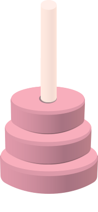

Help me to do it by myself - what's Montessori about
About Montessori
Maria Montessori, born in 1870, first female physician in Italy, devoted her life to observing and working with children.
On this basis, she created a system for educating children, called the montessori method. This method places emphasis on the free development of children.
The main values are: self direction, focus on kids needs, respect. The main principle: "help me do it myself".
It is important to know own pace and limitations and to experience satisfaction with what you achieve. Comparing to the typical education, here the teacher is not the focus of the classroom.
There is no traditional motivation system through the reward and punishment. Even if the kids are free to make their choices it doesn't mean there is no structure.
In montessori education, qualities such as plan, diligence, order,
concentration and responsibility are appreciated and valuable.
There are no traditional classrooms, desks and teachers, but there are rooms with places to work and mentors who follow the child, guide him or her.
The classroom equipment is also not accidental. It is divided into special areas. Learning happen naturally through real-life experiences in the carefuly designed
classroom with smart designed teaching materials (the so-called development aids) and kids-sized furnitures. Also - through
the contact with the nature. According to Maria Montessori, classrooms should also have authentic sinks, refrigerators, cookers, cleaning utensils, and even garden tools - one
copy of all of them, because thanks to this, the child learns patience and respect for others.
Montessori facilities in Poland exist at all levels of education - there are Montessori kindergartens, primary schools, middle schools and high schools.
They are located throughout the country, mainly in large cities.
Maria Montessori trusted that child directed, kid-driven method is the best one. Her method spread all around the world. We believe it too!

Contact
If you would like to talk, please call us or fill the form below. We will contact you back as soon as possible.
You are also welcome to visit us at Barcicka 10.
